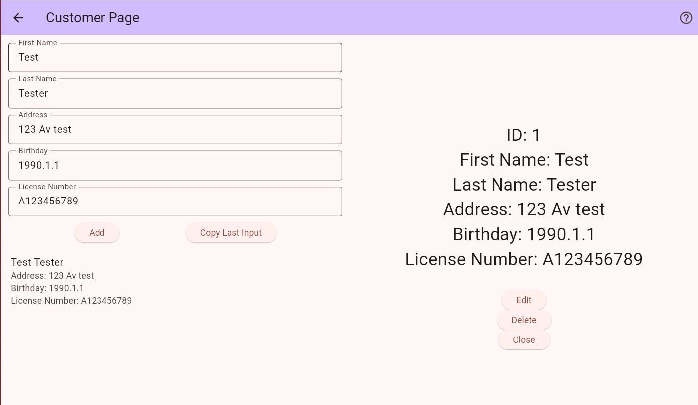

A focused showcase of my programming work, backend systems, and software tools.
A robust Java application for managing library workflows with role-based access, transaction tracking, and MySQL persistence.

A cross-platform mobile application developed to efficiently manage vehicle inventories, customer profiles, and sales offers. Features a robust local database architecture and multi-language support.
Object-oriented Java application that calculates nutrition metrics, formats labels, and includes unit test coverage.